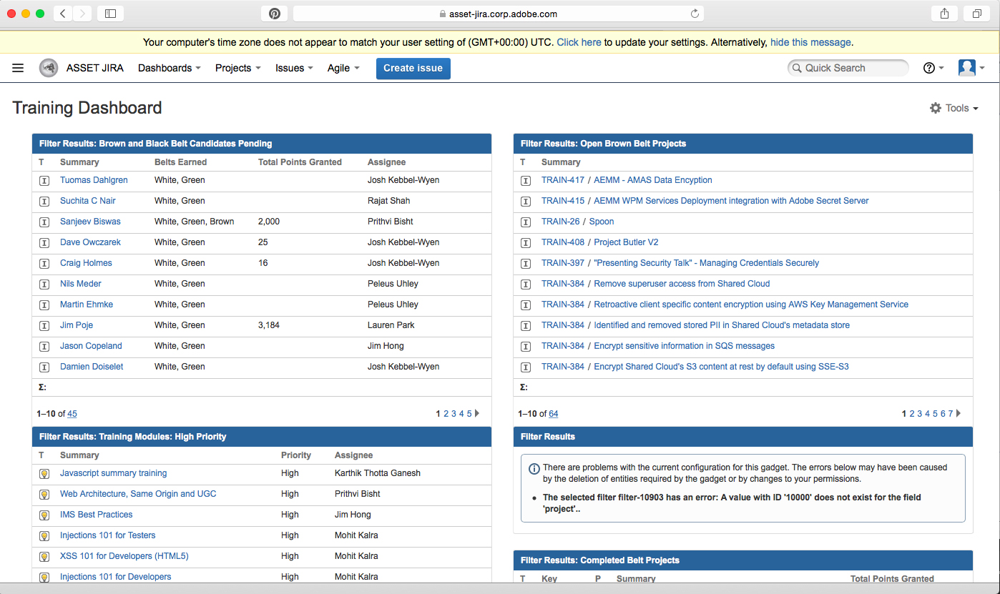
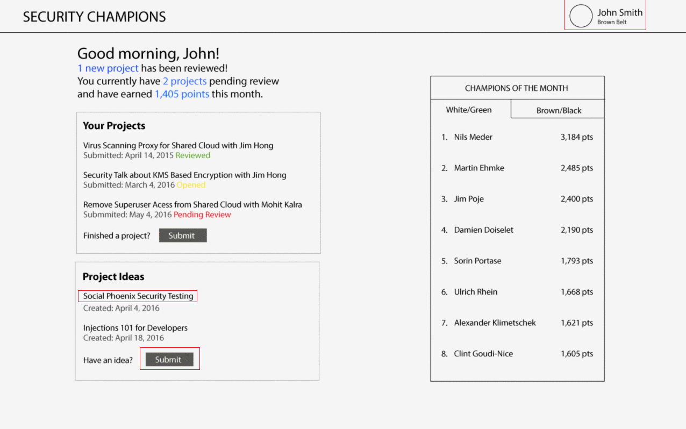

The Security Team previously used JIRA to hold the program's content, which included the list of employees in the program, user profiles, project profiles, and belt (white, green, brown, and black) lists. This was inefficient as the JIRA interface was disorganized, bland, and uninviting overall.
My task was to design a new interface for the Adobe Security Ninjas program that would completely replace the front-end JIRA interace (while the program's data would still live on JIRA).
Beyond giving the program a prettier UI, I set out to solve some problems with the old JIRA UI in the redesign. I identified the following problems with the old UI:
I created an interactive lo-fi prototype to demonstrate some of the new content features.
Since I was proposing new features to the program itself, I wanted to use this wireframe as a visual communication tool to discuss the new content and features with stakeholders. This wireframe was especially effective at demonstrating the benefits to some of the proposed features, such as how adding a random animated gif every time the user submits a project can add delight to the product by providing the user with a subtle, unexpected reward.
The wireframes started a great conversation about new features and content to include in the new redesign. The stalkeholders loved the idea of providing more feedback on the status of projects (whether or not they had been received and/or reviewed) and having more visibility into what other employees were doing. The animations were well received but were regarded as a lower priority item.